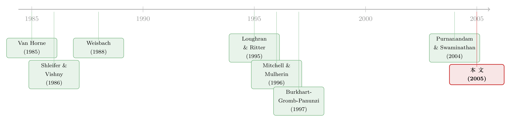

把一群小公司「攒」成一家上市公司——谁赚了，谁赔了？
本文读的是 Brown, Dittmar & Servaes (2005, RFS)：1990 年代美国有一种叫「roll-up IPO」的资本魔术——把一堆小私企同时塞进一个空壳公司、再一起敲钟上市。结果呢？投资者平均亏掉近四成，中位数亏掉八成。但这不是故事的全部：真正决定生死的，是上市那一刻的治理结构——原始创始人持股越多、占董事会席位越多，公司后来活得越好；而把交易「攒」起来的发起人（sponsor）给自己分得越多，公司反而越差。
1 一个「点石成金」的魔术
先讲一个 1990 年代华尔街很流行的把戏。
假设你看中了一个行业——比如殡葬、牙科诊所、空调维修、汽车经销。这些行业有个共同点：极度分散，遍地都是夫妻店、个体户，没有一个全国性的大玩家。你相信，只要把它们整合起来，规模经济（economies of scale）就能省下大笔成本、提高议价能力。
问题是：整合需要钱。传统上你有两条路。第一条，找一个行业里已经够大的公司去收购小弟——可很多分散行业压根没有这样的大哥。第二条，拉私募的钱，一家一家买，买到够大了再 IPO 套现——可这受限于私人资本的口袋深浅，而且能熬到上市的，往往是事后挑出来的幸存者，研究它们会有严重的幸存者偏差。
于是，第三条路登场了，这就是本文的主角：整合型首次公开募股 (roll-up initial public offering, roll-up IPO)。
它的玩法堪称精巧：先注册一个空壳公司，发起人往里塞一点现金覆盖尽调费用；然后空壳一边敲钟上市、一边同时把一批同行业的小私企（论文称之为「创始公司 (founding companies)」）的资产装进来，付给它们的对价是这家新上市公司的股票加现金。一夜之间，几十家小作坊变成了一家有流动股票、有现金、还能继续拿股票去买更多公司的上市集团。
用论文的话说，roll-up 是对「私人整合资本约束」的一种市场化解法：它既不需要私募基金垫资，也不需要行业里先存在一个大玩家。一次 IPO，就让公司在极短时间内完成了极端的扩张。
样本里的第一笔交易是 1994 年的 U.S. Delivery Systems；到 1998 年，作者一共找到了 47 笔有足够数据的 roll-up。其中有一笔叫 Pentegra Dental Group，一口气把 53 家牙科诊所捏在了一起。
听上去很美。可是——一个自然的问题是：这种「点石成金」，到底是创造了价值，还是只是 Van Horne (1985) 笔下那种「金融过度 (financial excess)」？
2 先看结果：投资者血亏
作者的样本拼接得相当扎实：roll-up 名单来自券商研报加 SEC 备案的人工搜索，IPO 与并购数据来自 SDC，股价来自 CRSP，财务数据来自 Compustat，盈利预测来自 IBES。观测单位是 roll-up 公司，区间 1994–1998，47 家。
先看股价。基准是 CRSP 市值加权指数。结果分两段，泾渭分明：
- 头六个月，roll-up 和市场没有显著差别（4.88% vs 7.93%，p 值 0.62）。这和经典的「新股之谜」一致——Loughran & Ritter (1995) 早就告诉我们，IPO 的弱势是慢慢显形的。
- 六个月之后，画风急转直下。第二年 roll-up 平均回报
−18.02%，而 Loughran-Ritter 样本里同期普通 IPO 还有 +3.6%。
把口径拉到最长——从 IPO 一直累计到退市或 2001 年 12 月 31 日（谁先到算谁）——结论触目惊心：roll-up 的平均总回报是 −39.46%，中位数 −82.77%；而同期市场是 +50.19%（中位数 +33.33%），差异在统计上高度显著。买 roll-up，平均而言是在烧钱。
再看经营业绩，这里就微妙了。用经营利润率、销售回报率这类指标去比同四位数 SIC 行业，roll-up 并没有显著跑输。可作者随即提醒：这些公司常常是自己行业里第一家公开上市的企业，Compustat 上那个「行业基准」本身就不靠谱。于是他们换了把尺子——比「分析师预期」。结果是：这些公司的实际盈利，远远低于当初的预测。再加上它们 IPO 时的估值显著高于行业里的其它公司——市场显然对这些交易抱了过高期望，而它们没兑现。
故事到这里，似乎只是又一个「IPO 高估、长期跑输」的老套路。但真正关键的一步，还没出现。
3 关键反转：横截面里藏着治理
作者真正的发现，不在「平均亏多少」，而在「为什么有的亏到归零、有的却活得不错」。这个横截面的巨大分散，才是论文的金矿。
他们把长期回报回归到 IPO 那一刻就已经确定的治理变量上，得到两个干净有力的结果：
- 创始人进董事会：董事会里来自创始公司的董事比例每高 1 个百分点，长期回报高
2.8个百分点。 - 创始人持股：创始人在上市时持股比例每高 1 个百分点，长期回报高
1.9个百分点。
换句话说，roll-up 要想成功，被收购进来的那些小老板必须继续留在牌桌上——既要握有股权（激励），又要占据董事席位（控制）。这正是 Shleifer & Vishny (1986)、Burkhart, Gromb & Panunzi (1997) 那条「大股东监督」逻辑的鲜活注脚：当掏空知识、维系客户、管住成本的人本身就是股东，公司才有人真正上心。
作者还堵住了一个明显的反向因果质疑：会不会是「好公司」让创始人更愿意留下、而不是创始人留下让公司变好？他们检验了一个「套现 (cashing out)」指标——创始人有没有借机大笔抛售离场——发现回报和它无关。既然不是「创始人预判公司会差所以提前跑路」，那么因果更可能是从治理流向业绩，而非相反。
经营业绩这边给出了一致的旁证：创始人持股越多、控制董事会比例越大，公司的会计业绩越能扛住市场的高预期。两条证据，指向同一个核心。
一句话概括本文的灵魂：整合一个行业能不能成，不取决于「攒」这个动作本身，而取决于「攒」的时候有没有把激励和控制权留给真正干活的人。
4 收购还在继续，但市场早已「看人下菜」
整合不会在 IPO 那天就结束。这 47 家公司在上市后到 2001 年底，又做了 614 笔收购，资产从 IPO 当年的中位数 $140 百万，膨胀到最后一年的 $525 百万——几乎翻了两番。由于常常一天宣布多笔交易，作者识别出 336 个不同的公告日。
有意思的是，这些后续收购的公告期市场反应竟然是正的：三天市场调整回报平均 +1.28%；按公司加总再平均，累计的并购公告异常回报高达 +10.47%。这和「长期血亏」似乎自相矛盾——市场怎么会一边看好收购、一边把股票打到地板？
谜底在于时机：公司倾向于在自己已经跑赢市场之后才出手收购——平均而言，它们在累计跑赢市场超过 16 个百分点之后才宣布并购。市场看到的是一家「近期表现优异、又在扩张」的公司，给个正反应不奇怪。可一旦把每笔收购当作起点往后看，并购之后的市场调整回报是 −113%。说白了，这些收购大多发生在估值的高点，然后一路向下。
而且，并购公告反应同样因人而异：创始人参与度越高，市场对其收购的反应越正面。又一次，核心变量回到了治理。
那么，当业绩开始恶化，公司会怎么自救？作者细致地记录了 IPO 到 2001 年底的组织变动，数字相当戏剧化：
55%的公司发生了 CEO 和／或董事长更替；51%出售资产或宣布重组计划；11%陷入财务困境；17%成为股东诉讼的被告；19%接受了私募股权注资（对一家已上市公司而言，这相当反常）。
可惜的是，这些补救基本无效：宣布这些事件时的异常回报并不显著，重组之后公司继续跑输。换董事、卖资产，都没能挽回当初治理结构没搭好埋下的雷。这反过来又强化了那个核心命题——（关于「换帅是英雄还是帮凶」这类治理动作的有效性，可参见《炒掉 CEO，董事是英雄还是「帮凶」？》）。
5 那么，谁赚了？
投资者平均血亏，可总得有人赚走了这笔钱。
答案是发起人 (sponsor)——那个把一堆小公司「攒」到一起的操盘者。作者按发行价计算：发起人拿到的现金加股票补偿，扣除其自身投资后，平均净赚 $29.2 百万（中位数 $15.35 百万），相当于公司初始发行价值的 17.28%。
这个数字有多夸张？作者诚实地说，很难判定它「公平」与否，但它远高于投行在并购中收的费用（McLaughlin 1990）、也远高于杠杆收购里发起人拿的份额（Kaplan & Stein 1993）。而且发起人还平均占据 20% 的董事席位。
更关键的是激励的方向：发起人持股越高，公司后续股价表现越差。 这和创始人持股的效果恰好相反。作者给出的解释直截了当——当发起人「给自己开太高的价」，留在公司里用来管理整合、推进后续收购的财富就不够了。换句话说，发起人的高额报酬不是「能力溢价」，更像是一种过度补偿，它直接侵蚀了交易的成功概率。
这里有一个漂亮的对称：同样是「持股」，创始人的持股是激励（越多越好），发起人的持股却是索取（越多越糟）。治理的好坏，从来不是「谁持股」，而是「让干活的人持股，还是让分钱的人持股」。
至此，整篇文章的逻辑闭合了：roll-up 这个金融创新本身是中性的，它既可能是解决资本约束的市场良方，也可能沦为发起人套现的工具——分水岭就在 IPO 那一刻的治理设计。
6 文献脉络
把这篇文章放回它的坐标系，能看得更清楚。
它的一只脚踩在「新股长期弱势」这条线上。Loughran & Ritter (1995) 用 1970–1990 的 4082 个 IPO 立住了「新股之谜」；Purnanandam & Swaminathan (2004) 进一步指出 IPO 在发行时往往被高估。本文证明 roll-up 是这条谱系里更极端的一员——连最被高估的普通 IPO 都不如。它另一只脚则踩在「上市公司经营业绩下滑」上：Jain & Kini (1994)、Mikkelson, Partch & Shah (1997) 都记录了公司上市后经营业绩的衰退，本文把它和治理结构挂上了钩。
但本文真正的归属，是「大股东、激励与公司治理」这条主干。Shleifer & Vishny (1986) 奠定了大股东监督的理论，Burkhart, Gromb & Panunzi (1997) 刻画了大股东监督与公司价值的权衡，Weisbach (1988)、Denis & Denis (1995) 则揭示了董事会与管理层更替的治理功能。本文的贡献在于找到了一个近乎完美的实验室：因为这些公司是从 IPO 那一刻从零开始搭建治理结构的，作者得以直接观察「初始治理 → 后续表现」的因果链——这是研究那些「上市前就已经历过多轮治理演变」的普通公司时做不到的。
而整合这件事为什么会在 1990 年代中期爆发？这要追溯到 Mitchell & Mulherin (1996) 和 Andrade, Mitchell & Stafford (2002) 那条「行业冲击驱动并购重组」的线索——信息技术进步与外包兴起，抬高了大量分散行业的最优企业规模。roll-up，正是市场对这一冲击的一种回应。

（这条「让控制权与现金流权对齐」的治理逻辑，本身是公司金融的母题之一，可参见《代理问题没有标准答案：一部「公司治理」的发明史》。）
7 评论与延伸（Q&A + 研究方向）
(a) 几个可能的疑问
Q：roll-up 和普通的「连环收购者 (serial acquirer)」到底差在哪？
差在起点。普通连环收购者通常先有一家成熟的上市平台，再陆续买买买；研究它们会遇到幸存者偏差——能上市的本就是赢家。roll-up 则是几十家小私企同时装进空壳一起上市，治理结构是当场从零搭的。这让作者能干净地观察「初始治理 → 后续表现」，而不必担心治理早已被历史内生地塑造过。
Q：47 家公司的样本会不会太小，结论不可靠？
样本确实小，这是这类「制度窗口期」研究的天然代价（roll-up IPO 只在 1994–1998 集中出现）。但作者的优势是深度：每家公司都手工读 S-1 与招股书，构造出创始人持股、董事来源、发起人报酬这些在标准数据库里根本没有的变量。横截面回归里 2.8 和 1.9 个百分点的系数量级大、且与会计业绩、并购反应三条证据相互印证，可信度因此提高。代价是统计功效有限，结论应被读作「强烈的暗示」而非「定案」。
Q：长期回报 −82.77% 的中位数，会不会只是被几家退市公司拖累的极端值？
恰恰相反，中位数比均值更惨（−82.77% vs −39.46%），说明亏损是普遍的、而非少数尾部事件拉低了平均。这反而强化了「roll-up 整体不行」的判断；真正有价值的信息藏在横截面——少数治理对了的公司，把整体的惨淡平均值往上拉了一点。
Q：会不会是创始人「预见」公司会好才留下，所以是业绩决定治理、而非治理决定业绩？
这是最致命的内生性质疑，作者用「套现」指标作了回应：长期回报与创始人借 IPO 大笔抛售离场无关。如果是「创始人预判公司差所以提前跑路」，套现变量本该有解释力。它没有，因此因果更可能是治理 → 业绩。当然这不是工具变量级别的识别，残余的内生性（如某种未观测的「创始人质量」同时影响留任意愿和公司前景）仍无法完全排除。
Q：为什么后续收购的「公告反应」是正的，长期却血亏，这不矛盾吗？
不矛盾，关键是时点选择。公司专挑自己跑赢市场 16 个百分点之后才出手，市场看到的是一家「近期强势又在扩张」的公司，短期给正反应。但这些收购大多落在估值高点，往后看每笔收购的累计回报是 −113%。这其实呼应了 Roll (1986) 的「狂妄假说 (hubris hypothesis)」——管理层在自我感觉良好时最容易做出毁灭价值的收购。
Q：发起人拿 17.28% 算「过高」，可如果攒一笔 roll-up 真的很费劲，这难道不该是合理报酬吗？
作者很诚实：他们手上只有关于「攒一笔交易有多难、多少胎死腹中」的零星轶事证据，无法直接判定「公平价」。但有两条间接证据指向「过高」：一是横向对比，它远超投行并购费和 LBO 发起人份额；二是因果——发起人持股越高，公司后续股价越差。如果这是对真实努力的合理补偿，不该系统性地预测更糟的表现。它更像是把本该留在公司里推进整合的财富，提前装进了发起人口袋。
(b) 几个可能的研究问题与提案
1. roll-up 公司的债务与信用利差
【经济故事】本文只看了股权与治理，可这些公司上市后疯狂举债收购、资产两年翻两番，债权人怎么定价？如果治理差的 roll-up 后来普遍陷入财务困境（样本里 11% 进入 distress），那么发行时的治理结构应当能预测其债券利差与违约——一个「治理 → 信用风险」的干净检验。
【可行性】中。需要把样本里发过公募债的公司匹配到
TRACE／Mergent FISD，但 1994–1998 的 roll-up 发债样本可能很薄，统计功效堪忧；可考虑扩展到更广义的连环收购者来增样。
2. 把 roll-up 的逻辑搬到 SPAC 上
【经济故事】2020 年前后的 SPAC 热潮，本质上是 roll-up 的「精神续作」——同样是空壳上市、同样有一个拿走巨额报酬的发起人（sponsor）、同样被质疑发起人激励与小股东利益错位。本文的核心命题（发起人持股越高、表现越差；目标方继续持股越多、表现越好）能不能在 SPAC 样本里复现？
【可行性】高。SPAC 样本量大、发起人 promote 与目标方 earnout 条款披露充分，
SDC／SEC 文件可得，识别策略可直接照搬本文的横截面回归。这是个 doable 且有现实意义的题目。
3. 外资发起人 vs 本土发起人的整合表现
【经济故事】在跨境整合中，发起人是本土还是外资，可能影响其对目标行业的信息优势与监督能力。结合外资持有人这条线（参见《外资真是「蝗虫」吗？》），可以问：外资主导的行业整合，治理失灵是更严重还是更轻？
【可行性】中。需要跨国的整合交易数据与发起人国籍信息，构造难度较大；可先在单一新兴市场（整合活动活跃且有外资准入变动的自然实验）里做。
4. 「分析师预期」作为业绩基准的方法论推广
【经济故事】本文一个被低估的方法贡献是：当一家公司是行业里第一家上市企业、没有干净的同业基准时，用
IBES分析师预期作为「市场期望」的代理。这套思路能推广到所有「无可比公司」的情形——独角兽、平台型企业、新兴行业龙头。【可行性】高。
IBES数据成熟，方法清晰，可作为一篇方法论 + 应用的论文，检验「预期落差」对长期回报的预测力是否系统性强于传统行业调整。
8 我的判断
这篇文章的贡献是找到了一个干净的治理实验室。绝大多数公司治理研究都受困于内生性——治理结构和公司质量互为因果、纠缠不清。而 roll-up 的妙处在于：治理结构是在 IPO 那一刻从无到有、被一次性设定的，于是「初始治理 → 后续表现」这条链得以被相对直接地观察。2.8 和 1.9 这两个系数，加上会计业绩与并购反应的交叉印证，把「让干活的人持股并掌权」这个朴素命题，钉在了硬数据上。发起人持股与表现负相关那条，更是一记漂亮的对称反证。
但识别上的担忧也要老实说。其一，样本只有 47 家，且高度集中在一个特定的制度窗口，外部有效性存疑——它讲的究竟是「治理的普遍规律」，还是「1990 年代美国分散服务业的特定故事」？其二，「套现」检验虽然削弱了反向因果，却不是工具变量级别的识别；某种未观测的「创始人能力／诚信」完全可能同时驱动留任意愿与公司前景，使治理系数被高估。其三，发起人报酬「过高」的判断，本质上缺一个结构性的基准——我们不知道一笔成功 roll-up 的均衡报酬该是多少，只能从横向比较和因果方向去推断。
我最想看到的后续，是把这套「初始治理 → 长期表现」的因果链，搬到样本更大、条款披露更充分的 SPAC 上做一次复制。如果本文的核心命题在二十多年后的另一场「空壳上市 + 发起人套现」浪潮里依然成立，那它就不只是一段金融史的注脚，而是一条关于「整合型上市」的普遍规律。这，才是这篇 2005 年老文章今天最值得被重读的理由。
参考文献
Andrade, G., M. L. Mitchell, and E. Stafford (2002). New Evidence and Perspectives on Mergers. Journal of Economic Perspectives 16, 103–120.
Burkhart, M., D. Gromb, and F. Panunzi (1997). Large Shareholders, Monitoring, and the Value of the Firm. Quarterly Journal of Economics 112, 693–728.
Denis, D. J., and D. K. Denis (1995). Performance Changes Following Top Management Dismissals. Journal of Finance 50, 1029–1057.
Jain, B. A., and O. Kini (1994). The Post-Issue Operating Performance of IPO Firms. Journal of Finance 49, 1699–1726.
Kaplan, S. N., and J. C. Stein (1993). The Evolution of Buyout Pricing and Financial Structure in the 1980s. Quarterly Journal of Economics 108, 313–357.
Loughran, T., and J. R. Ritter (1995). The New Issues Puzzle. Journal of Finance 50, 23–51.
McLaughlin, R. M. (1990). Investment-Banking Contracts in Tender Offers: An Empirical Analysis. Journal of Financial Economics 28, 209–232.
Mikkelson, W. H., M. M. Partch, and K. Shah (1997). Ownership and Operating Performance of Companies That Go Public. Journal of Financial Economics 44, 281–307.
Mitchell, M. L., and J. H. Mulherin (1996). The Impact of Industry Shocks on Takeover and Restructuring Activity. Journal of Financial Economics 41, 193–229.
Purnanandam, A. K., and B. Swaminathan (2004). Are IPOs Really Underpriced? Review of Financial Studies 17, 811–848.
Roll, R. (1986). The Hubris Hypothesis of Corporate Takeovers. Journal of Business 59, 197–216.
Shleifer, A., and R. W. Vishny (1986). Large Shareholders and Corporate Control. Journal of Political Economy 94, 461–488.
Van Horne, J. C. (1985). Of Financial Innovation and Excesses. Journal of Finance 40, 621–631.
Weisbach, M. S. (1988). Outside Directors and CEO Turnover. Journal of Financial Economics 20, 431–460.